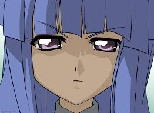

Sobre
Rika-chan é uma Deusa imortal
resa num loop temporal por causa de uma maldição que aflige a vila. A sua missão é conseguir salvar todos os seus amigos, ao mesmo tempo que enfrenta uma cientista malvada, e ao mesmo tempo que tem de ver mortes horríveis vezes e vezes sem conta.
Por causa disto, ela é uma alma com mais de 500 anos presa num corpo de uma menina de 10 anos.

As duas Deusas, Rika-chan e Hannyu.

- Emocionalmente inteligente
- Sábia
- Esperançosa
- Sabe fazer sacrifícios
Amigos
Os amigos que estão presos no loop temporal com rika-chan, mas que não têm noção disso. Eles são os principais afetados pela maldição de Hinamizaua, mas, ao longo dos loops, vão ganhando cada vez mais conscieência, à procura de um Final Feliz para todos.